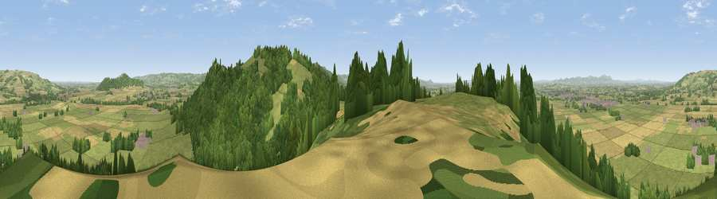

Viewpoint near Teddington
#5069 in England · top 14% of its area beats it · near TeddingtonThe view, rendered

A 360° render of this exact spot computed from the terrain model, tree cover and land cover — summer colours, afternoon light, calibrated against photographs of famous viewpoints. Real trees, hedges and buildings will differ in detail.
The panorama
Grey silhouette: terrain skyline in each direction (720 bearings, Earth curvature and refraction included). Dashed green: skyline with trees (+15 m) and buildings (+8 m) as obstacles. Blue strip: how far the ground is visible on each bearing.
Where the view opens
Wedge length = distance to the farthest visible ground on that bearing (vegetation-aware). Rings at 10, 25 and 50 km.
What fills the view
48% grassland · 30% woodland · 19% cropland · 2% built-up
Angular shares of the visible panorama (visual magnitude), not map area. Landscape diversity 0.49 (0–1 Shannon).
Key numbers
More beautiful places nearby
The staircase of upgrades: each row has a higher view potential than everything closer. Driving times are estimates from straight-line distance, calibrated against real road routing — check an actual route before setting out.
| Place | Direction | Drive | Score |
|---|---|---|---|
| Viewpoint near Alstone | ESE · 1 km | ~3 min | 72.9 |
| Viewpoint near Alstone | SE · 1 km | ~3 min | 79.8 |
| Nottingham Hill | SSE · 4 km | ~9 min | 80.9 |
| Viewpoint near Bredon's Norton | NNW · 8 km | ~16 min | 81.3 |
| Bredon Hill | N · 8 km | ~16 min | 83.0 |
| Black Hill | WNW · 22 km | ~36 min | 83.1 |
| Millennium Hill | WNW · 22 km | ~36 min | 86.9 |
| Worcestershire Beacon | WNW · 23 km | ~38 min | 87.1 |
51.98847, -2.05292 · source: screening · position refined by local search. Computed location — check access rights before visiting.